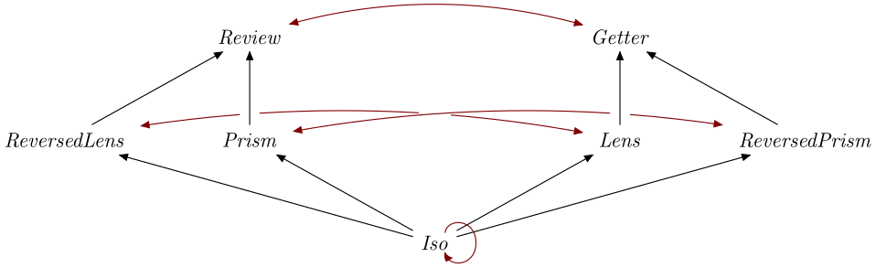

| Safe Haskell | Safe-Inferred |
|---|---|
| Language | Haskell2010 |
Optics.Re
Description
Some optics can be reversed with re. This is mainly useful to invert
Isos:
>>>let _Identity = iso runIdentity Identity>>>view (_1 % re _Identity) ('x', "yz")Identity 'x'
Yet we can use a Lens as a Review too:
>>>review (re _1) ('x', "yz")'x'
In the following diagram, red arrows illustrate how re transforms optics.
The ReversedLens and
ReversedPrism optic kinds are backwards versions of
Lens and Prism respectively, and are present so
that re . re

Synopsis
- class ReversibleOptic k where
- type ReversedOptic k = r | r -> k
- re :: "re" `AcceptsEmptyIndices` is => Optic k is s t a b -> Optic (ReversedOptic k) is b a t s
Documentation
class ReversibleOptic k where Source #
Class for optics that can be reversed.
Associated Types
type ReversedOptic k = r | r -> k Source #
Injective type family that maps an optic kind to the optic kind produced
by reversing it.
ReversedOpticAn_Iso=An_IsoReversedOpticA_Prism=A_ReversedPrismReversedOpticA_ReversedPrism=A_PrismReversedOpticA_Lens=A_ReversedLensReversedOpticA_ReversedLens=A_LensReversedOpticA_Getter=A_ReviewReversedOpticA_Review=A_Getter
Methods
re :: "re" `AcceptsEmptyIndices` is => Optic k is s t a b -> Optic (ReversedOptic k) is b a t s Source #
Reverses optics, turning around Iso into Iso,
Prism into ReversedPrism (and
back), Lens into ReversedLens (and back)
and Getter into Review (and back).
Instances
| ReversibleOptic A_Getter Source # | |
| ReversibleOptic A_Lens Source # | |
| ReversibleOptic A_Prism Source # | |
| ReversibleOptic A_ReversedLens Source # | |
Defined in Optics.Re Associated Types type ReversedOptic A_ReversedLens = (r :: Type) Source # Methods re :: forall (is :: IxList) s t a b. AcceptsEmptyIndices "re" is => Optic A_ReversedLens is s t a b -> Optic (ReversedOptic A_ReversedLens) is b a t s Source # | |
| ReversibleOptic A_ReversedPrism Source # | |
Defined in Optics.Re Associated Types type ReversedOptic A_ReversedPrism = (r :: Type) Source # Methods re :: forall (is :: IxList) s t a b. AcceptsEmptyIndices "re" is => Optic A_ReversedPrism is s t a b -> Optic (ReversedOptic A_ReversedPrism) is b a t s Source # | |
| ReversibleOptic A_Review Source # | |
| ReversibleOptic An_Iso Source # | |